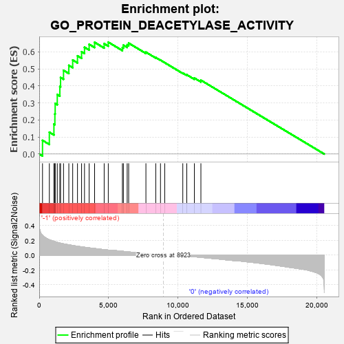
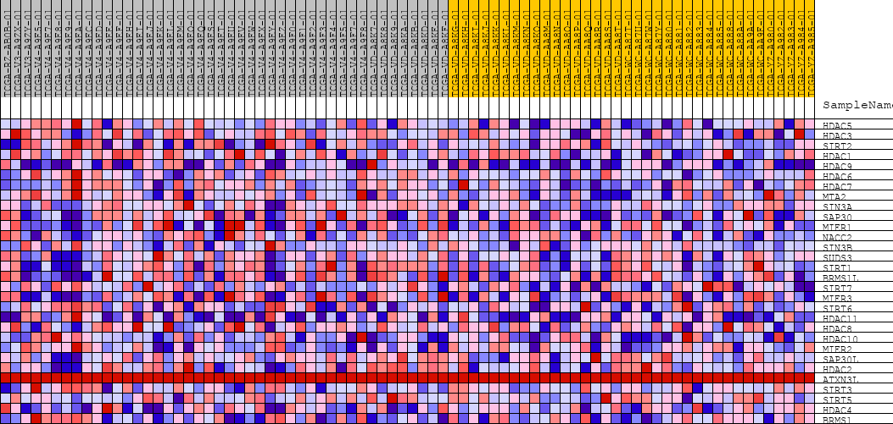
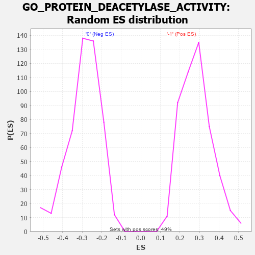

| | | Dataset | GSEAExpression.phenotype_uvm.cls#-1_versus_0 |
| Phenotype | phenotype_uvm.cls#-1_versus_0 |
| Upregulated in class | -1 |
| GeneSet | GO_PROTEIN_DEACETYLASE_ACTIVITY |
| Enrichment Score (ES) | 0.6565906 |
| Normalized Enrichment Score (NES) | 2.3105865 |
| Nominal p-value | 0.0 |
| FDR q-value | 0.0037159976 |
| FWER p-Value | 0.002 |
Table: GSEA Results Summary

Fig 1: Enrichment plot: GO_PROTEIN_DEACETYLASE_ACTIVITY
Profile of the Running ES Score & Positions of GeneSet Members on the Rank Ordered List
| PROBE | DESCRIPTION
(from dataset) | GENE SYMBOL | GENE_TITLE | RANK IN GENE LIST | RANK METRIC SCORE | RUNNING ES | CORE ENRICHMENT | | 1 | HDAC5 | na | | | 237 | 0.268 | 0.0803 | Yes |
| 2 | HDAC3 | na | | | 729 | 0.209 | 0.1279 | Yes |
| 3 | SIRT2 | na | | | 1059 | 0.187 | 0.1759 | Yes |
| 4 | HDAC1 | na | | | 1128 | 0.183 | 0.2354 | Yes |
| 5 | HDAC9 | na | | | 1149 | 0.182 | 0.2968 | Yes |
| 6 | HDAC6 | na | | | 1300 | 0.173 | 0.3489 | Yes |
| 7 | HDAC7 | na | | | 1486 | 0.164 | 0.3961 | Yes |
| 8 | MTA2 | na | | | 1537 | 0.162 | 0.4491 | Yes |
| 9 | SIN3A | na | | | 1750 | 0.153 | 0.4911 | Yes |
| 10 | SAP30 | na | | | 2132 | 0.140 | 0.5204 | Yes |
| 11 | MIER1 | na | | | 2410 | 0.131 | 0.5517 | Yes |
| 12 | NACC2 | na | | | 2755 | 0.120 | 0.5761 | Yes |
| 13 | SIN3B | na | | | 3049 | 0.112 | 0.6003 | Yes |
| 14 | SUDS3 | na | | | 3260 | 0.107 | 0.6266 | Yes |
| 15 | SIRT1 | na | | | 3594 | 0.098 | 0.6441 | Yes |
| 16 | BRMS1L | na | | | 3987 | 0.089 | 0.6557 | Yes |
| 17 | SIRT7 | na | | | 4676 | 0.075 | 0.6477 | Yes |
| 18 | MIER3 | na | | | 4972 | 0.068 | 0.6566 | Yes |
| 19 | SIRT6 | na | | | 5988 | 0.052 | 0.6249 | No |
| 20 | HDAC11 | na | | | 6058 | 0.051 | 0.6389 | No |
| 21 | HDAC8 | na | | | 6332 | 0.046 | 0.6413 | No |
| 22 | HDAC10 | na | | | 6440 | 0.043 | 0.6510 | No |
| 23 | MIER2 | na | | | 7681 | 0.022 | 0.5979 | No |
| 24 | SAP30L | na | | | 8390 | 0.009 | 0.5664 | No |
| 25 | HDAC2 | na | | | 8730 | 0.003 | 0.5510 | No |
| 26 | ATXN3L | na | | | 9035 | 0.000 | 0.5361 | No |
| 27 | SIRT3 | na | | | 10336 | -0.007 | 0.4750 | No |
| 28 | SIRT5 | na | | | 10622 | -0.012 | 0.4653 | No |
| 29 | HDAC4 | na | | | 11170 | -0.022 | 0.4459 | No |
| 30 | BRMS1 | na | | | 11639 | -0.030 | 0.4334 | No |
Table: GSEA details [plain text format]

Fig 2: GO_PROTEIN_DEACETYLASE_ACTIVITY
Blue-Pink O' Gram in the Space of the Analyzed GeneSet

Fig 3: GO_PROTEIN_DEACETYLASE_ACTIVITY: Random ES distribution
Gene set null distribution of ES for GO_PROTEIN_DEACETYLASE_ACTIVITY